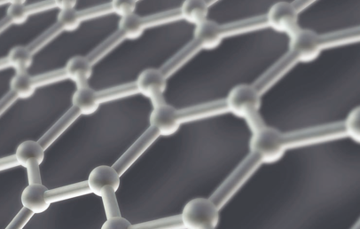
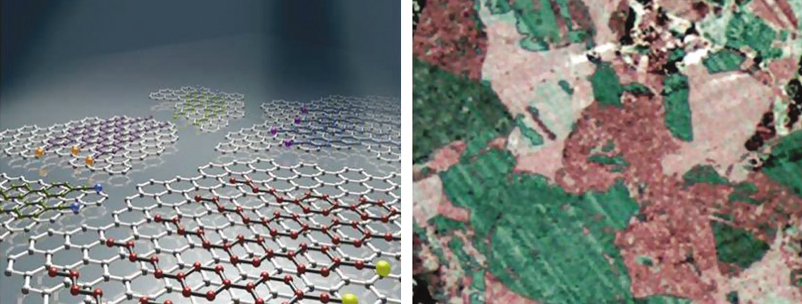

Report by Subjects
Report by Subjects
KAIST RESEARCH ACHIEVEMENTS
Direct Visualization of Graphene Domains and Boundaries by Optical Birefringency
Department of Chemical & Biomolecular Engineering
Hee-Tae Jung
Summary
In the near future, electronic devices formerly assembled on glass substrates are expected to be manufactured on flexible substrates. Flexible devices are so versatile and durable to be used for various purposes such as fashioning clothing, medical diagnoses, and maximizing their portability. Transparent electrodes acting as the core in such devices are comprised of carbon materials, such as graphene, whereas former devices have employed rare-earth elements, such as indium.
R&D Report

As our optical visualization technique employs a simple liquid crystal coating method, a large area of graphene domains(~few cm) can be observed by an overall process that is very short and inexpensive, which is essential in studying graphene properties. This technique can be used in not only graphene synthesized by CVD methods, but also in observing domains for all types of graphene (mechanical exfoliated, chemically synthesized, etc.). We expect that our highly versatile and advantageous technique will be widely used in future graphene research.
Due to its excellent electronic properties and high transparency, graphene is a strong candidate to replace ITO as a transparent electrode. Moreover, the high mechanical strength and flexibility of graphene allows it to be used in future flexible devices. However, as the properties of graphene are greatly influenced by its domain boundaries, the polycrystalline graphene currently produced a lower yield in electrical and mechanical performance compared to single crystal graphene. The key to produce graphene with high quality is to be able to easily observe the domain structure and its boundaries, which is the core technology to greatly enhance the properties and commercialization of graphene.
Analysis tools such as SEM, TEM, STM are incapable of observing graphene domains, and even if possible the visible range is only a few hundred nanometers. Also, such methods are complex, expensive, and requires a long time for measurement. Therefore, the development of a method to easily observe a large area of graphene domains in a short time and at a low cost is necessary.
Figure 1(Left) As seen in the figure, the alkyl chain structure of the nematic liquid crystal matches the lattice parameter of graphene, which induce liquid crystals to align epitaxially to the orientation of each graphene domain. Also, the benzene structure in the liquid crystal molecule interacts strongly with the sp2 bonding honeycomb structure, contributing to the alignment. When these aligned liquid crystals are observed through a polarized optical microscope, various alignments of liquid crystals on each graphene domain exhibit a different color as seen in Figure 1(Right), enabling easy observation of graphene domains and its boundary structure.

Figure 1. (Left) Scheme of liquid crystals aligned along the graphene domains,
(Right) Actual graphene domains observed through a polarized optical microscope
Research Funding
- National Research Laboratory Program (R0A-2007-000-20037-0, NRF)
- World Class University Program(R32-2008-000-10142-0, NRF)
- The Global Frontier Research Center for Advanced Soft Electronics
Research Results
- Journals : Nature Nanotechnology 7, 29-34(2012)
- Patents : Method for optical visualizing of graphene domains(Application No. : PCT/KR2012/000248)